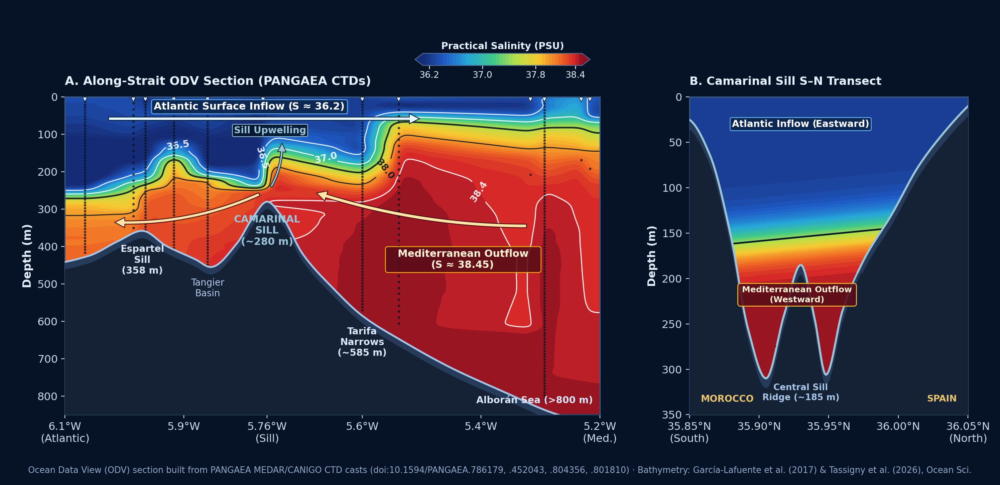
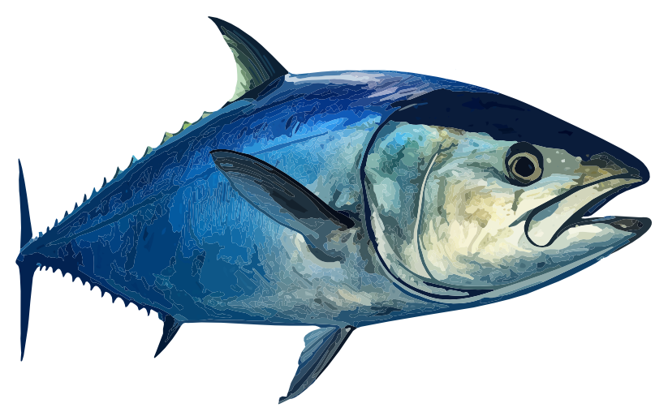
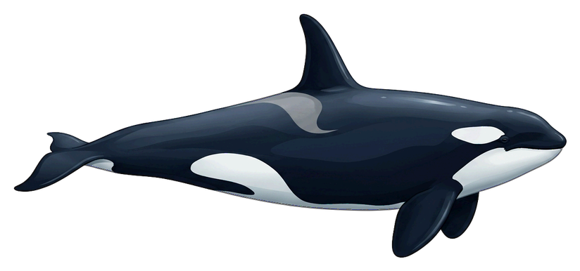
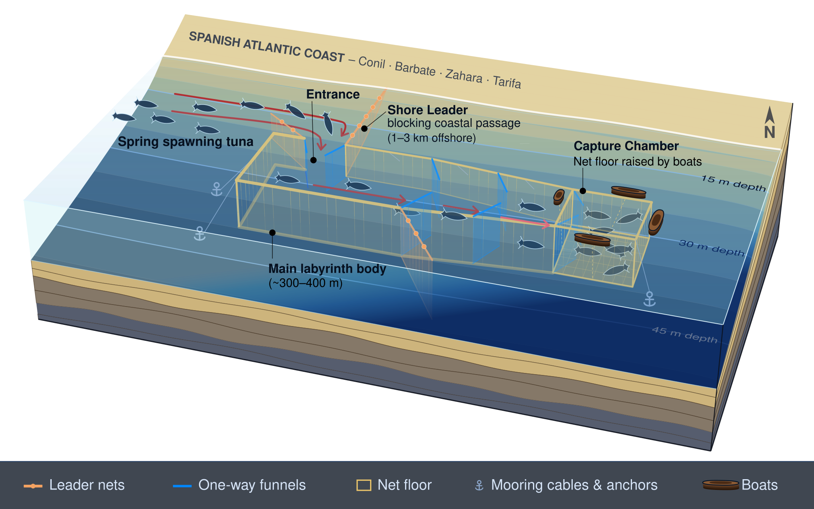
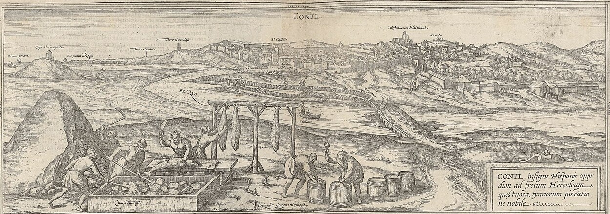
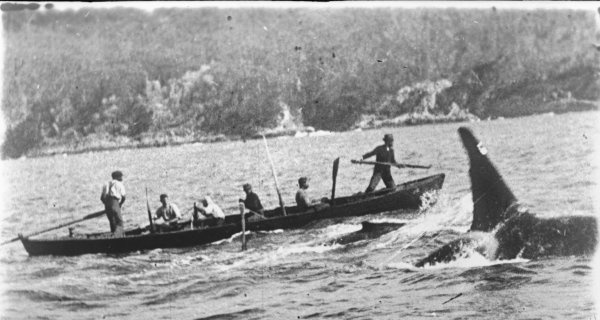
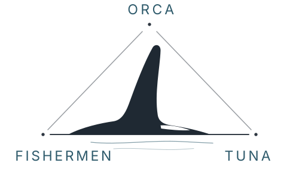

Where Titans Meet
STRAIT OF GIBRALTAR
Three ancient forces converge between Europe and Africa that reminds us of humanity’s enduring bond with the wild.
The Birth of the Strait
The Strait of Gibraltar has shaped civilisations, migrations, and ecosystems for millions of years. Around 5.96 million years ago, the modern Strait did not exist. The collision of the African and Eurasian plates closed the Strait, isolating the Mediterranean Sea and leading to its near-total desiccation — the Messinian Salinity Crisis. Basin sea levels dropped by ~1,500 m. Later, 5.33 million years ago, an Atlantic megaflood refilled the Mediterranean Sea through a process known as the Zanclean flood. The two basins were reconnected and the Strait of Gibraltar was established as the only gateway —of just 14 Km— for marine life to pass between the Atlantic and Mediterranean.


The Meeting of Two Worlds
Under the waters of the Strait hides a submarine mountain, the Camarinal Sill. It rises approximately from 800 m to 280 m water depth, and it governs the exchange between the two oceans. Above 150 m, fresher Atlantic Surface Water flows eastward; below it, flows dense, hypersaline Mediterranean Outflow Water spills westward. Their collision triggers internal hydraulic jumps and intense upwelling, enriching the area known as "Las Bajas" with nutrients.

Bluefin Tuna Migration
Swimming from the Gulf of Mexico to the Mediterranean Sea and back again, the Atlantic bluefin tuna (Thunnus thynnus) surges in spring to spawn in the Med and returns in summer to feed in the Atlantic. Electronic tagging studies by Block et al. (2005) and Rooker et al. (2008) tracked hundreds of fish across the Atlantic basin, revealing two populations — western spawners homing to the Gulf of Mexico and eastern spawners returning to the Mediterranean — that overlap on open-ocean foraging grounds. Migrating adults passing through the Strait average 187 kg (ranging from 170 cm to 290 cm in length). Riding the shallow surface Atlantic inflow eastward and returning through the cold, deep Mediterranean outflow at depths between 290 m and 500 m, the tuna dictate the cadence of the Strait. Local fishermen adapt their artisanal techniques to harvest them — from coastal trap-nets when they enter the Strait to deep drop-lines when they exit. Interestingly, resident Iberian killer whales adapt alongside human fishing techniques.

The Iberian Orcas
Despite a common misconception in English, the orca (Orcinus orca) is not a whale — it is the largest dolphin species (family Delphinidae). 18th-century Spanish sailors who watched coordinated pods hunt great baleen whales off Iberia called them "asesina de ballenas" — literally "whale killer", and from this derived its name inversion.
Listed as Critically Endangered by the IUCN, the Strait’s resident population was catalogued at 39 surviving individuals across 5 pods in 2011 (Esteban et al., 2016). Updated demographic monitoring between 2011 and 2023 reveals a small, stable subpopulation of 37 surviving individuals in 2023 structured into 6 communities (5 recognized in 2011 plus a 6th identified since 2012; 4 range widely along the Iberian coast while 2 remain exclusively in the south; Esteban et al., 2026).
This resident community requires roughly 1,654 tonnes of bluefin tuna per year. In open water, orcas cannot catch giant adult tuna (>1.5–2 m) by active chase alone, as large tuna possess superior aerobic stamina and outswim their aerobic limits. Instead, pods rely on 30-minute endurance-exhaustion chases (~13–18 km/h, burst 21 km/h) specifically targeting smaller 0.8–1.5 m fish until oxygen debt forces them to surface (Guinet et al., 2007; Esteban et al., 2016).

Resident Subpopulation Abundance (1999–2023)
Photo-identified resident abundance in the Strait of Gibraltar and wider Iberian waters: 39 individuals across 5 pods in 2011 (Esteban et al., 2016), updated to 37 surviving individuals across 6 communities in 2023 (Esteban et al., 2026).
Almadraba Fishing
Each spring from April to June, for over 3,000 years since Phoenician antiquity, Cádiz fishermen have anchored passive labyrinth-nets called almadrabas perpendicular to the coast — intercepting pre-spawning bluefin riding the shallow Atlantic inflow. Because fixed coastal traps harvest selectively without chasing pods offshore, all five resident orca matrilines historically hunted alongside the almadraba corridor long before industrial Mediterranean purse-seiners depleted stocks (Rodríguez-Roda, 1964; Esteban et al., 2016).

Co-Hunting
In July and August, post-spawning tuna exit westward at 300+ m across Las Bajas — a 6.9 km² plateau midway between Tarifa and Tangier where 6-hour tidal upwelling concentrates both fish and artisanal drop-line fleets (~8.7 lines/km²). After stone-weighted hook fishing began here in 1995, 2 of the 5 resident pods (18 "Interacting" whales) culturally learned within a single generation to patrol the upper 2–50 m, pressing against vertical ropes to sense tension vibrations from large (~187 kg) hooked tuna as fishermen haul them upward (Esteban et al., 2016; Esteve, 2026).
Underwater Video Evidence — Tactile Line Assessment (Esteve, 2026)
Long-term mark–recapture modeling by Esteban et al. (2016) revealed how profoundly this cultural tradition split the population. Because hooked ~2 m giants yield far more energy at minimal swimming cost — requiring ≤8 fish/day (~92 t/summer) versus 21–141 small fish/day via exhausting chases — interacting pods reached 99.1% adult survival and +3.9% annual growth, while the 21 non-interacting whales (Pods B, C & D) stagnated near zero growth. Yet fishery reliance proved a double-edged sword: when overfishing crashed Strait drop-line landings from 604 t/yr (2000–2004) to 123 t/yr (2005–2010) — well below the 573 t/yr viability threshold — interacting calf survival fell from 100% to 0% (2006–2010) with a one-year gestation/lactation lag (p = 0.004), rebounding only when catches recovered in 2011.
Interacting Pods vs. Total Community
Abundance of fishery-interacting pods A1 & A2 (solid blue, circles; n = 18, +3.9%/yr) vs. all 5 pods (dashed stone, squares; n = 39). Shaded band marks the 2006–2010 calf-loss plateau (Esteban et al., 2016).
Drop-Line Catches & INTERACTING Calf Survival
Strait drop-line landings (bars) vs. interacting calf survival (filled = 100%, hollow = 0%). Below 573 t/yr, calf survival dropped to 0% the following year (1-yr lag, p = 0.004; Esteban et al., 2016).
Demographic and energetic divergence between drop-line interacting and non-interacting pods, 1999–2011 (Esteban et al., 2016)
| Ecological Parameter | Interacting (Pods A1 & A2) | Non-Interacting (Pods B, C & D) |
|---|---|---|
| Summer Strategy & Prey | Spring chase + summer drop-line depredation of ~2 m (~187 kg) hooked tuna | Active endurance-exhaustion chases only (0.8–1.5 m, 20–70 kg tuna) |
| Daily Prey Requirement | ≤8 large hooked tuna/day (~92 t over Jul–Aug; 8.6 t documented off Tarifa in 2004) | 21–141 small-to-medium tuna/day at high aerobic sprint cost |
| 2011 Surviving Abundance | 18 individuals (grew from 11 in 1999; flat at 15 during 2005–2010 crash) | 21 individuals (only 1 calf and 1 juvenile observed across 12 years) |
| Adult Annual Survival (SA) | 99.1% (SE = 0.011; juvenile SJ = 96.6%) | 90.1% (SE = 0.050; p < 0.005) |
| Calving Rate & Growth (λ) | 22% calving (13 births, 7-yr interval) · +3.9%/yr (λ = 1.039) | 2% calving (p = 0.001) · ~0%/yr (λ = 0.995) |
Conservation implication (Esteban et al., 2016): Sustaining all 39 Strait dolphins requires allocating 3–9% of the eastern Atlantic bluefin quota (539–1,654 t/yr) to predator energetics, establishing a March–August low-noise management zone (ambient shipping averages 112.5 dB re 1 µPa), and prioritizing artisanal drop-lines and almadrabas over industrial Mediterranean purse-seiners.
Three Titans. One Strait.
A Story Unfinished.
The Strait of Gibraltar remains one of the last places on Earth where
apex predators, ancient fisheries, and marine biodiversity intersect in a
living, breathing equilibrium — one that demands our understanding and protection. A fragile equilibrium, sustained by tradition and respect for the sea.
A compelling hypothesis has arisen among researchers that coastal hominins —including Neanderthals inhabiting the sea caves of Gibraltar— may have harvested bluefin tuna alongside hunting orcas, as pods drove exhausted fish into shallow embayments where shore crews could spear them, much as pre-modern Strait fishermen did for millennia.

Such cross-species cooperation is historically documented. In Twofold Bay (Eden, Australia), shore-based whalers —both Indigenous Thawa people and European boat crews— cooperated for nearly a century with wild orca pods led by the iconic male Old Tom, honoring an unwritten pact known as the 'Law of the Tongue' whereby the orcas fed on the tongue and lips before boatmen towed the catch ashore. Modeling this mutualism through fuzzy rule-based logic, Coppola et al. (2015) demonstrated that reciprocal trust and cultural learning, rather than mere opportunism, sustained this rare human–cetacean partnership across generations.

nla.obj-140622977) / Wikimedia Commons (Public Domain)
“Let us never forget our bond with wildlife.”

The 37 surviving Iberian orcas, across 6 matrilineal pods , regulate pelagic food web dynamics across the Atlantic–Mediterranean ecotone (Esteban et al., 2026). Decades of demographic and trophic monitoring identify four vital science-based measures to secure their recovery:
Prey Biomass & Quota Protection
Reserve at least 573–1,654 tonnes/year of adult bluefin tuna within the Strait for predator energetics to stabilize calf survival (Esteban et al., 2016), favoring low-impact almadrabas over industrial purse-seiners.
PCB & Toxic Bioaccumulation Reduction
Enforce persistent organic pollutant bans to mitigate toxic polychlorinated biphenyl (PCB) levels exceeding 50 mg/kg lw, which currently depress adult female survival and drive an 8.3-year interbirth interval (Jepson et al., 2016; Esteban et al., 2026).
Drop-Line Gear Mitigation & Safety
Deploy breakaway leaders and circle hooks in the summer artisanal fleet to halt mouth-hook entanglements and dorsal fin abrasion marks documented across interacting pods (Esteban et al., 2026).
Acoustic Refuges & Speed Restrictions
Enforce seasonal speed caps (<10 knots) and acoustic buffer zones across critical foraging arenas — Las Bajas Bank and the Camarinal Sill — during July–August to curtail acoustic masking and vessel collisions (Guinet et al., 2007; Esteban et al., 2026).